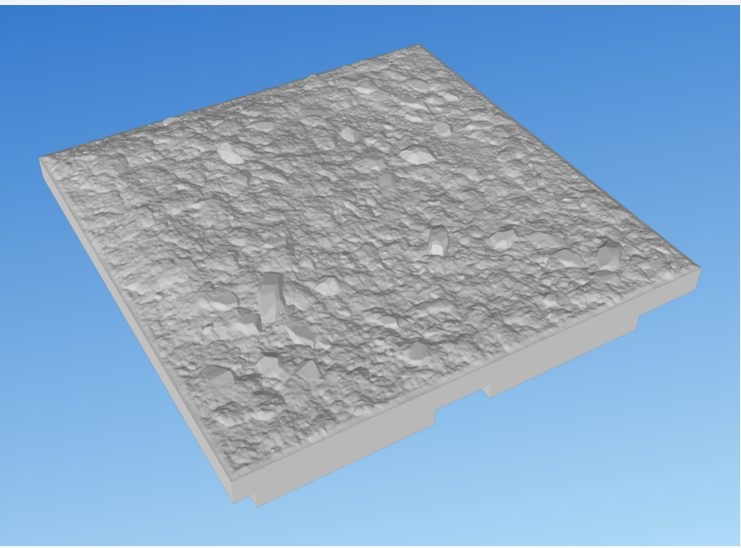
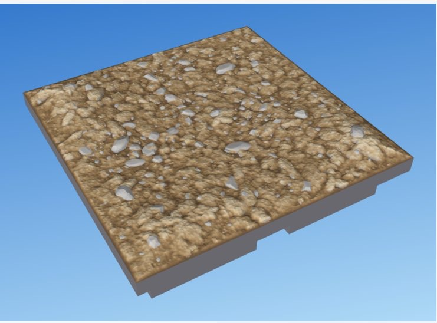
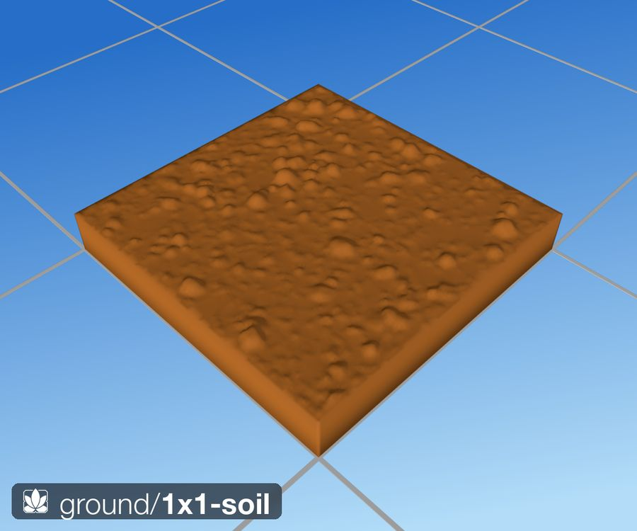
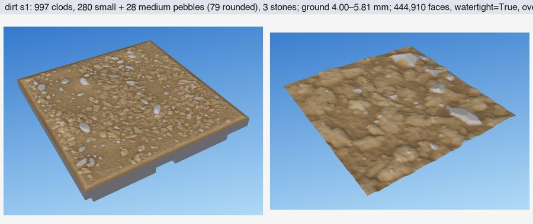

What it looks like
Miniature bare earth, readable at four scales at once. Broad, low rises swell up to about 3 mm from the edge level, with flat plains between. Over them lie soil clods: lumpy crumbs in patches, with smoother tamped ground between the patches. A fine grit and a few sand grains cover everything. Pebbles gather in loose clusters, mostly in the low ground, as if washed there: many small ones (0.5–1.5 mm), some medium (2.2–4.5 mm), and a few larger stones bedded in soil. There are no footprints, no tracks and, by default, no cracks.
Every patch of the surface keeps at least one printed layer of relief, so a dark primer and a drybrush pick out the clod tops and pebble facets everywhere, not just in a render.


The dirt texture is also the exposed ground in every other lab: grass stands on it, water's shore and banks use it, and rocks sit in it.
Using it in a tile
The plainest tile is dirt on its own. bumps lifts gentle rises, bump-size sets how wide they are, and clods sets how cloddy the soil is:
tile soil size="1x1" seed=13 {
stack {
dirt bumps=2.5 bump-size=14 { // rises up to 2.5 mm, about 14 mm across
clods some // or: few, many
}
}
}Under other elements, write dirt first and let the rest stand on it. Restrict it to a region with in=:
tile soil+grass size="1x1" seed=42 {
line margin wobble=5 { through "0.48,1" "0.52,0" }
region meadow { bounded-by margin; fill "0.25,0.5" }
stack {
dirt
grass in=meadow
}
}Against a cliff or wall, dirt can heap up in a bank, and a scatter written inside it lands on it (from 2x1-cliff):
dirt level=edge {
bank against=cliff height="1.5..3.5" reach="3..6.5"
scatter per-square=45 { pebble size="1..2.2" buried="20%..50%" }
}stones none leaves out the few larger stones dirt beds in by default, for a tile that places its own rocks.
Reference
in= along=scatter inside it lands on itControls
| Control | Takes | Default | What it does |
|---|---|---|---|
level | level | ground | where the surface sits |
bumps | mm, 0–15 | 0 | how far it rises and falls |
bumps up | mm, 0–15 | — | how far it rises |
bumps down | mm, 0–15 | — | how far it falls |
bump-size | mm, 5–70 | — | how wide the hills are: broad and rolling, or choppy |
clods | word | some | lumps of earth on the surface
|
stones | word | some | a few rocklab stones bedded in the dirt
|
bank | group | — | earth heaped against a cliff or wall |
bank against | tag | — | what the bank leans on Required. |
bank height | mm | — | height at the face |
bank reach | mm | — | how far out it runs |
In the library
1x1-cliff-corner.dtilelib:tiles/cliffs/1x1-cliff-corner.dtile1x1-cliff-mound.dtilelib:tiles/cliffs/1x1-cliff-mound.dtile1x1-cliff-spire.dtilelib:tiles/cliffs/1x1-cliff-spire.dtile1x1-cliff.dtilelib:tiles/cliffs/1x1-cliff.dtile2x1-cliff-blocks.dtilelib:tiles/cliffs/2x1-cliff-blocks.dtile2x1-cliff-escarpment.dtilelib:tiles/cliffs/2x1-cliff-escarpment.dtile2x1-cliff-needles.dtilelib:tiles/cliffs/2x1-cliff-needles.dtile2x1-cliff-rubble.dtilelib:tiles/cliffs/2x1-cliff-rubble.dtile2x1-cliff.dtilelib:tiles/cliffs/2x1-cliff.dtile2x2-cliff-canyon.dtilelib:tiles/cliffs/2x2-cliff-canyon.dtile2x2-cliff-corner.dtilelib:tiles/cliffs/2x2-cliff-corner.dtile2x2-cliff-massif.dtilelib:tiles/cliffs/2x2-cliff-massif.dtile2x2-cliff-plateau.dtilelib:tiles/cliffs/2x2-cliff-plateau.dtile1x1-floor-stone-wall.dtilelib:tiles/floors/1x1-floor-stone-wall.dtile1x1-floor-stone.dtilelib:tiles/floors/1x1-floor-stone.dtile1x1-grass-flowers.dtilelib:tiles/ground/1x1-grass-flowers.dtile1x1-grass.dtilelib:tiles/ground/1x1-grass.dtile1x1-soil+grass-angle.dtilelib:tiles/ground/1x1-soil+grass-angle.dtile1x1-soil+grass-corner.dtilelib:tiles/ground/1x1-soil+grass-corner.dtile1x1-soil+grass.dtilelib:tiles/ground/1x1-soil+grass.dtile1x1-soil-corridor+grass.dtilelib:tiles/ground/1x1-soil-corridor+grass.dtile1x1-soil-corridor-open+grass.dtilelib:tiles/ground/1x1-soil-corridor-open+grass.dtile1x1-soil-corridor-t+grass.dtilelib:tiles/ground/1x1-soil-corridor-t+grass.dtile1x1-soil-corridor-turn+grass.dtilelib:tiles/ground/1x1-soil-corridor-turn+grass.dtile1x1-soil-corridor-x+grass.dtilelib:tiles/ground/1x1-soil-corridor-x+grass.dtile1x1-soil-u+grass.dtilelib:tiles/ground/1x1-soil-u+grass.dtile1x1-soil.dtilelib:tiles/ground/1x1-soil.dtile1x1-wall-brick-corner.dtilelib:tiles/walls/1x1-wall-brick-corner.dtile1x1-wall-brick.dtilelib:tiles/walls/1x1-wall-brick.dtile1x1-wall-fieldstone-corner.dtilelib:tiles/walls/1x1-wall-fieldstone-corner.dtile1x1-wall-fieldstone.dtilelib:tiles/walls/1x1-wall-fieldstone.dtile1x1-wall-stone-corner.dtilelib:tiles/walls/1x1-wall-stone-corner.dtile1x1-wall-stone.dtilelib:tiles/walls/1x1-wall-stone.dtile1x1-water+grass-angle.dtilelib:tiles/water/1x1-water+grass-angle.dtile1x1-water+grass-corner.dtilelib:tiles/water/1x1-water+grass-corner.dtile1x1-water+grass-tree.dtilelib:tiles/water/1x1-water+grass-tree.dtile1x1-water+grass.dtilelib:tiles/water/1x1-water+grass.dtile1x1-water+soil-angle.dtilelib:tiles/water/1x1-water+soil-angle.dtile1x1-water+soil-corner.dtilelib:tiles/water/1x1-water+soil-corner.dtile1x1-water+soil.dtilelib:tiles/water/1x1-water+soil.dtile1x1-water-corridor+grass.dtilelib:tiles/water/1x1-water-corridor+grass.dtile1x1-water-corridor+soil.dtilelib:tiles/water/1x1-water-corridor+soil.dtile1x1-water-corridor-open+grass.dtilelib:tiles/water/1x1-water-corridor-open+grass.dtile1x1-water-corridor-open+soil.dtilelib:tiles/water/1x1-water-corridor-open+soil.dtile1x1-water-corridor-t+grass.dtilelib:tiles/water/1x1-water-corridor-t+grass.dtile1x1-water-corridor-t+soil.dtilelib:tiles/water/1x1-water-corridor-t+soil.dtile1x1-water-corridor-turn+grass.dtilelib:tiles/water/1x1-water-corridor-turn+grass.dtile1x1-water-corridor-turn+soil.dtilelib:tiles/water/1x1-water-corridor-turn+soil.dtile1x1-water-corridor-x+grass.dtilelib:tiles/water/1x1-water-corridor-x+grass.dtile1x1-water-corridor-x+soil.dtilelib:tiles/water/1x1-water-corridor-x+soil.dtile1x1-water-u+grass.dtilelib:tiles/water/1x1-water-u+grass.dtile1x1-water-u+soil.dtilelib:tiles/water/1x1-water-u+soil.dtile
Generated from dharmatiles looks dirt by cargo xtask docs.
Sizes and levels
- Tile. Any size in 35 mm squares. The lab's default is 2×2.
- Edge level. Ground meets every tile edge at the edge level: 3.4 mm above the base in the Rust engine (
library/parts/edges.dtile). dirtlab uses 4.0 mm, the DungeonBlocks dirt band; the Rust dirt look sits on 3.4 mm (Default 12). - Rises only. Inside the tile the ground only goes up from the edge level. dirtlab's ground runs from the edge level to about 7.6 mm, with a median near 4.5 mm; the rises fade out over the 9 mm next to the rim, and no slope is steeper than 24°.
- Pebbles and stones. Per square: 45–75 small pebbles (0.5–1.5 mm) and 8–13 medium (2.2–4.5 mm). On a 2×2 tile: 4–7 larger stones (4.5–7.5 mm) in 4–7 loose clusters.
- Flat ground. Without
bumpsthe ground is flat at its level: 5 mm by default.
Edges and joining tiles
- The texture ramps in over the outer 1 mm, so the ground is exactly at the edge level all round. Any two ground tiles butt with no step.
- Grass, water and cliff tiles meet ground at the same edge level; this is the edge contract on the tile system page.
Printing and painting
- No supports. Print base down at 0.2 mm layers with a 0.4 mm nozzle. The earth, clods and pebbles are one height field, which cannot overhang. The few larger stones are sunk below the soil line, so their undersides are hidden.
- Texture that survives slicing. In any 1.5 mm window there is at least 0.2 mm (one layer) of relief, over at least 97% of the tile. Round 2 reaches about 98%. This is the printable-texture rule, and dirt is where it was first written.
- Painting. Prime dark, drybrush light: clod tops and pebble facets catch the highlight, and the creases keep the base coat. Paint the pebbles grey after.
- Checked on every build. Each STL is one watertight body that survives a float32 reload.
The full printing rules are on the printing page.
How it is made
Step by step
Dirt is one height field built up in order of scale. The layers are combined with a smooth maximum, not added: adding read as porridge, while the smooth maximum keeps every clod and pebble a distinct object sitting on the ground, with a soft fillet at its foot.
The animation is a simplified stand-in for the idea, drawn in your browser; it is not the program's output. What the program does, in order:
- Ground: the level, rises and edge ramp of
ground, plus a low soil roughness. - Clods: patchy, by a 6 mm patch field that never drops below 30%; each clod is 1–3 lumpy lobes with a flattish tilted top, partly sunk and soft-maxed onto the soil.
- Grit: fine noise and sparse sand grains.
- Pebbles: dart-thrown into loose clusters biased into low ground, largest first; each a flattened cap cut by tilted planes, sunk 25–45%.
- Edge: the texture ramps in over the outer 1 mm, so the rim is exactly the edge level and tiles butt flush.
- Printable texture: every patch keeps at least 0.2 mm of relief in any 1.5 mm window, so a drybrush finds it.
The code: crates/dt-looks/src/dirt.rs.
The generator is dirtlab/dirtlab.py (line numbers at commit e0bcb77). Everything except the larger stones is one height field on a 0.15 mm grid. Each scale is its own stage, and stages are combined with a smooth maximum, not added: a clod or pebble is a new surface that wins where it is higher, with a soft fillet where it meets the ground. Adding bumps instead would blur them into porridge.
- Rises.
ground_undulation(line 184): two blurred noises (14 mm and 5 mm), the lowest 35% flattened to plains, peaks scaled to 2.2–3.2 mm, faded near the rim, slope capped at 24°. A fine soil roughness is added on top. - Clods.
clod_layer(line 205): a 6 mm patch field sets where clods are dense and where the ground is tamped (never below 30% density). Each clod is 1–3 lumpy lobes with a flattish tilted top, partly sunk, soft-maxed into the soil. - Grit.
grit(line 269): fine noise at 0.45 mm and sparse sand grains. - Pebbles.
place_pebbles(line 351) andpebble_shape(line 300): pebbles are dart-thrown into 4–7 cluster blobs, biased toward low ground. Each is a flattened cap cut by 4–11 tilted tangent planes (75% faceted, 25% worn), with a 5–8-sided skirt so the outline is angular, then sunk 25–45% and filleted into the soil. - Stones.
make_stones(line 395) andbed_stones(line 417): rocklab rocks, flattened to 0.65 of their height, sunk below the lowest ground under them in a 0.3 mm soil bank. - Tile.
assemble(line 545): the height field becomes a solid, unioned with a 1 mm slab, the stones and the DungeonBlocks base, and checked bystl_safe(line 529).
The texture without the rises and stones is exported as dirt_relief (line 507). Every other lab uses it for exposed ground.
The Rust ground look (crates/dt-looks/src/ground.rs and dirt.rs) ports the stages above (P2); dirtlab's stones come with rocks in P3.
Key constants
| Constant | Line | Value | Meaning |
|---|---|---|---|
CELL_MM | 44 | 0.15 | Height-field grid (mm). |
EDGE_MM | 45 | 4.0 | Edge level above the base (mm). |
RIM_TEX_MM | 49 | 1.0 | Texture ramps in over this rim width. |
UND_SIGMA_MM | 52 | 14, 5 | Rise scales (mm). |
UND_RELIEF_MM | 55 | 2.2–3.2 | Peak rise per tile (mm). |
UND_MAX_SLOPE_DEG | 57 | 24 | Steepest rise. |
CLOD_DENS_FLOOR | 63 | 0.3 | Tamped ground still carries some clods. |
CLOD_DENSITY | 64 | 0.7 /mm² | Clod attempts at full patch density. |
CLOD_R_MM | 65 | 0.45–2.4 | Clod radius (mm), skewed small. |
SMALL_PER_SQ, MED_PER_SQ | 92, 94 | 45–75; 8–13 | Pebbles per square. |
PEB_SINK | 99 | 0.25–0.45 | Share of a pebble buried. |
STONES_2X2 | 115 | 4–7 | Larger stones per 2×2. |
STONE_Z_SCALE | 118 | 0.65 | Stones flattened so they don't stand like teeth. |
Design record
For the people developing the look: Shawn's rulings, the requirements, audit numbers, the variant history and open issues. Owned by the labs (dirtlab). Approved: round 2, 29 Oct 2026. Rust: flat ground done in P1; dirt and rises are P2, the first look to reach parity.
Rulings (5)
Shawn's decisions, oldest first. Each holds unless a later line replaces it.
| Date | Ruling | Shawn's words |
|---|---|---|
| 27–28 Oct | grasslab's bare-soil patches (a dip, roughness and dome pebbles) are rejected. | “bare patches are terrible” |
| 27–28 Oct | The patches' later version still fails. | “bare patches have some weird artifacts” |
| 29 Oct | The brief for dirtlab: plain earth, pebbles, no footprints, probably no cracks. | “Plain bare earth. No footprints, just dirt and pebbles. Maybe some cracks, but probably not even cracks, just texture and pebbles.” |
| 29 Oct | After slicing v1g: more relief, no frame at the rim, pebbles that register at tabletop distance, stronger cloddy/smooth contrast, texture visible everywhere at 0.2 mm layers. Led to round 2 and the printable-texture rule. | — (his slice showed large smooth plains) |
| 29 Oct | Exposed ground is dirt everywhere: grasslab's mud and the other soil textures are retired, and every lab uses dirt_relief (20c51e8). | — |
Requirements
The lab's requirement IDs from revision 1 (29 Oct 2026), with later amendments marked inline. [S] is checked by a script or statistic, [R] by eye. The original page is in the archive.
- REQ-OUT-1 [S] A run writes
dirtlab/out/2x2-dirt-s<seed>.stl(-crackssuffix with cracks). - REQ-OUT-2 [S] One watertight body after a float32 STL reload; ground, slab, stones and DungeonBlocks base fused.
- REQ-OUT-3 [S] Deterministic per seed; build ≤ 10 s; STL ≤ 25 MB.
- REQ-OUT-4 [S]
--sheet --seeds …writes a timestamped contact sheet. - REQ-H-1 [S] The tile edge sits at exactly 4.0 mm all round, with a 0.4 mm flat band. Amended 29 Oct (round 2): no flat band; the texture ramps in over 1 mm. The Rust edge level is 3.4 mm (default 12, 1 Nov).
- REQ-H-2 [S] Interior ground about 4.3–5.9 mm (median about 4.5). Amended 29 Oct (round 2): rises up to about 7.6 mm.
- REQ-H-3 [S] Rises only: nothing dips below the edge level.
- REQ-E-1 [R] Multi-scale: rises, clods, grit and pebbles all read at once.
- REQ-E-2 [R] Clods are crumbs, not blisters.
- REQ-E-3 [R] Patchy, not uniform: cloddy areas and tamped areas. Amended 29 Oct (round 2): stronger contrast, and tamped ground keeps at least 30% clod density.
- REQ-E-4 [S] No cracks by default;
--cracksadds a few fine ones. - REQ-P-1 [R] About 50–75 small and 5–9 medium pebbles per square; 2–4 larger stones per tile. Amended 29 Oct (round 2): 8–13 medium at 2.2–4.5 mm; 4–7 stones.
- REQ-P-2 [R] Stone-like: faceted or worn, flattish; never round domes or discs.
- REQ-P-3 [R] Loosely clustered, biased into low ground; never on a grid.
- REQ-P-4 [S] Sunk 25–45% with a soil fillet; nothing floats.
- REQ-FDM-1 [S] No overhang past 45°. Amended 31 Oct: the project limit is 55°; dirtlab audits at 55° since 2 Nov.
- Added 29 Oct. REQ-D-TEX [S] Within any 1.5 mm window, relief is at least 0.2 mm over at least 97% of the interior.
Named failure modes
| # | Name | Looks like |
|---|---|---|
| D1 | Porridge | Uniform noise everywhere, no structure. |
| D2 | Bubbles | Round domes or discs, especially in clusters. |
| D3 | Cells / bowls | Packed lumps in a Voronoi-like cell pattern. |
| D4 | Rough concrete | Fine grit only, no clods or stones. |
| D5 | Teeth | Tall upright stones out of scale with the earth. |
| D6 | Pasted pebbles | Stones sitting on the surface, no bedding. |
| D7 | Freckles | A regular sprinkle of identical dots. |
Acceptance
- S1: seed 1 reads as miniature bare earth with none of D1–D7.
- S2: seeds 1–3 differ in clod patches, pebble clusters and stones.
- S3: a print, primed and drybrushed: clod tops and pebble facets catch the highlight; the creases keep the base coat.
Audit numbers (round 2)
By construction: the earth, clods and pebbles are one height field, which cannot overhang; the ground never dips below the edge level and sits exactly at it on the rim; stones are sunk below the lowest ground under them.
Checked: audit_overhang (line 561) sums the area of faces past 58° from vertical (the 55° limit plus 3°); stl_safe (line 529) rounds to float32, merges vertices and refuses anything that is not one watertight body. The texture rule is measured by texcheck.py, which lived in a session scratchpad and is not in the repo.
| Tile | Watertight | Overhang (mm²) | Ground (mm) | Windows under one layer | Build |
|---|---|---|---|---|---|
| 2×2, seed 1 | yes | 0.00 | 4.00–7.61 | 1.9% | 3.3 s |
| 2×2, seed 2 | yes | 0.00 | 4.00–7.26 | about 2–2.6% | 3.0 s |
| 2×2, seed 3 | yes | 0.01 | 4.00–7.50 | about 2–2.6% | 3.0 s |
Seed 1 has 872 clods, 260 small and 36 medium pebbles and 6 stones, in 447,632 faces. Before round 2 (v1g), 32.8% of windows were under one layer. Rust P1's flat 1×1 builds in 0.09 s, watertight, with 0 overhang.
Variant history
One line per variant, oldest first. All are in git.
| Date | Variant | What changed, and why |
|---|---|---|
| 2 Jun | Library noise soil (165fc04) | Roughness at three scales baked into the terrain. Porridge. |
| 2–3 Jun | Library SoilCarpet (52c2a3a → c53c1de) | Two tiers of super-Gaussian blobs, clustered, draped on slopes. An even carpet of blisters, about 20 config fields. Still the library's soil. |
| 27–28 Oct | grasslab bare-soil “mud” | A dip, roughness and dome pebbles in the grass. “bare patches are terrible”. Retired 29 Oct. |
| 29 Oct | dirtlab v1a | First build: round blister clods, pyramid pebbles. |
| 29 Oct | dirtlab v1b–v1d | Smooth maximum instead of a sum; lumpy multi-lobe clods; pebbles as tangent planes of a cap. |
| 29 Oct | dirtlab v1e–v1g (ed438c8) | 58° polygonal skirt, foot mounds, stones flattened, sparser grains. Looked right in renders, but 33% of the tile sliced as flat plains. |
| 29 Oct | dirtlab round 2 (897430c), approved | Bigger rises, no rim frame, a clod density floor, more and larger pebbles, and the printable-texture rule. Flat windows 32.8% → 1.9%. |
| 29 Oct | Shared dirt_relief (20c51e8) | The texture becomes the exposed ground in every lab. |
| 2 Nov | Rust ground, P1 | Flat ground at a level, on the DungeonBlocks base; output matches Python's volume exactly. |

SoilCarpet on 1x1-soil. Predates the red-overhang rule.
Rust port
P1 (done): the ground look paints a flat surface at a level (crates/dt-looks/src/ground.rs). The flat 1×1 tile builds in 0.09 s, watertight, deterministic at 1, 4 and 16 threads, with the same volume as Python. Its test print in a DungeonBlocks socket is the last P1 exit criterion.
P2, “Dirt and hills: the first look at parity”: ports smax (line 137), clods (205), pebbles (300, 351) and dirt_relief (507); stones came in P3 with rocks: stones some (the default, dirtlab's 4 to 7 a 2×2 tile), none or many (provisional). They keep a bank's width from the edge of their area, so a lower neighbour's bank never leaves a stone's base showing. With them on, cargo xtask parity dirt-stones is within tolerance except the 10–40 mm relief band, 1.21 times the lab's against a ±20% tolerance. Exit gate: the printable-texture rule at 97% or more, metrics within tolerance, a build in 1 s or less, and Shawn's sign-off over 4 seeds. The parity harness already writes a Python-only dirtlab contact sheet at seeds 1–4. If dirt misses sign-off after three review rounds, the plan stops to diagnose (see the plan).
Open issues
- Edge level: dirtlab uses 4.0 mm; the Rust edge contract and grasslab use 3.4 mm. P2 settles dirt on 3.4 mm, checked with a test print in P3.
texcheck.py, the printable-texture measure, is not in the repo; P2's harness needs it in code.- The Python library's
SoilCarpetis still the soil insrc/tiles/; it is replaced at cutover (P6), not before. clods fewandclods manyhave provisional numbers; P2 tunes them.
References
- DungeonBlocks ground heights: tile system, standard heights.
History
The library's soil started as noise in June 2026 and became SoilCarpet's blob carpet. In the labs, grasslab's bare patches were rejected on 27–28 Oct, and dirtlab was written on 29 Oct from Shawn's brief: seven versions in one night, then round 2 after Shawn sliced v1g and saw flat plains. Round 2's texture became the shared exposed ground the same morning. The archive keeps the lab's original requirements and design and iteration log, and the Rust study's variants and notes.